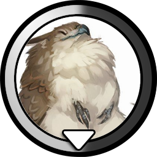

World Tree - Vicinity
Humble Beginnings... You awake in front of a budding tree.
Retinue Management
In here, you may hire, train or level up your heroes. Heroes usually require influence or some kind of threshold to advance/hire. One of the first heroes you can hire is Cilia Aurarius, the Bunny Knight. Each hero also has "color affinity". Heroes with allied color affinity will unlock synergy bonuses and such! Doesn't mean you can't just go on and unlock everything still. However heroes require hefty influence investment, so make them count.
Perks do not have to be unlocked in particular order, but hiring must come first always.
Cilia Aurarius, the Bunny Knight
Type - Ilarun Noble Knight
Color Identity: Virtue 1 / Nobility 1
Does she have any clue what she's doing?-Perks-
On Hire: Generates 0.5 influence by base. Also +1 to number of Ilaruns per Warren.
Peasant Levy: Increases the maximum number of Ilaruns held by Warrens by another +2.
Squire Cohort: Unlocks Squires, also grants +0.1 influence gain per Baroness.
Squires require influence to upkeep, but grants additional population branches.
Unlocks Conquest tab.
Serfdom: Upkeep of each Idle/Worker Ilaruns are decreased by 0.05.
Kingdom: 1.) Unlocks the construction of Hamlets, Tier 1.5 Ilarun Pop Building.
2.) Number of Worker Max required for each Baroness is decreased by -1.
(2) requires Virtue 2 Affinity.

Goldbeak, the Griffin Prince
Type - Griffin Noble Heir
Color Identity: Virtue 1 / Nobility 1
He's fat?-Perks-
On Hire: Generates 1 military power by base.
Aviary: Unlocks construction of Aviary, which grants +1 military power gain per Squire.
Enlist Pigeons: Improves all Forager income by +1.
Prince of Talons: Improves Cilia's On Hire perk by additional +1.5.
Combined Arms: For every perk unlocked from Cilia and Goldbeak combined,
Goldbeak generates additional +1 military power.
Welcome to Conquest
The land near the World Tree is fogged and barren. There lies dangerous critters which do not dare approach us, but requires use of force to clear out.
You can manage your standing army here. Currently, your troops generate total of 0 military power per second.
Any unused, uninvested military power is lost!
You may click on a button to start conquering territories. Each territory provides unique one time bonuses or unlock features!
Recruitment
You may recruit various types of troops below. Each troop type has different upkeep and requirements!
Currently, you have 0 Squires. Generating 0 military power per second.
Each squire requires 0.05 influence to maintain. They each generate 1 military power per second.
You may have up to 0 Squires.